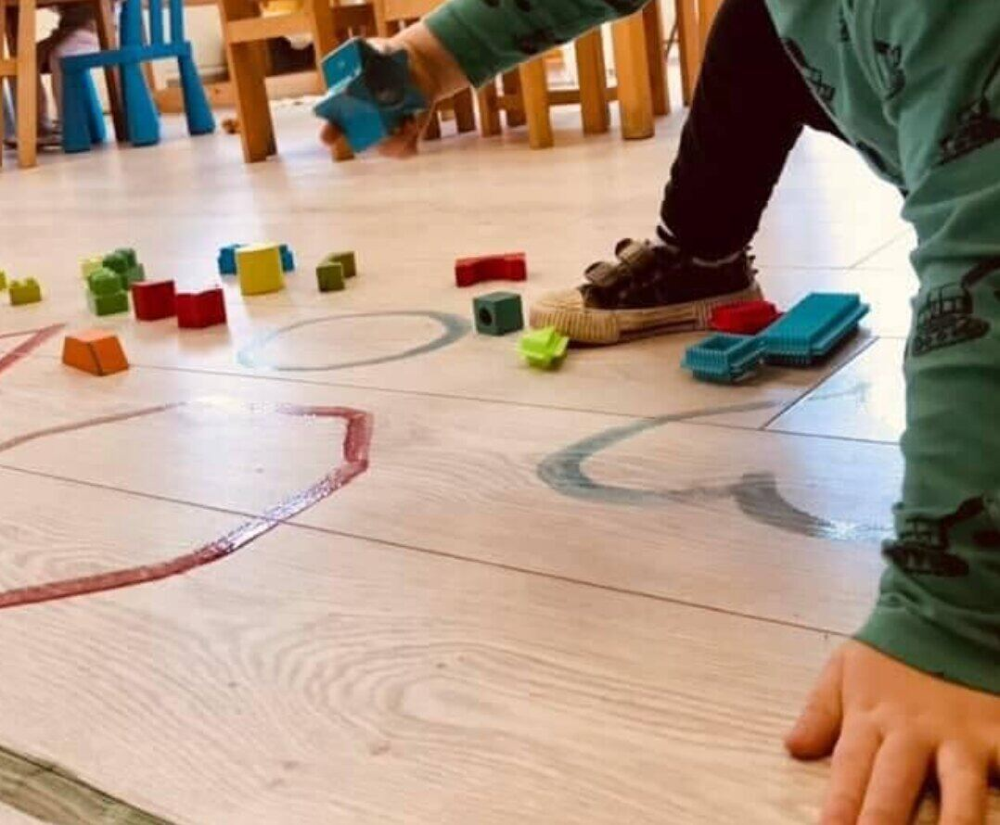
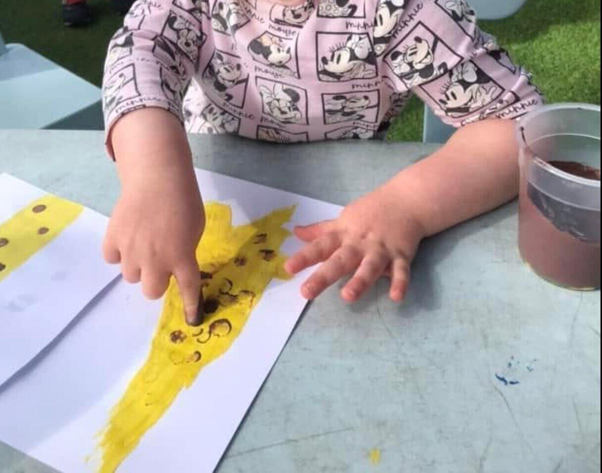
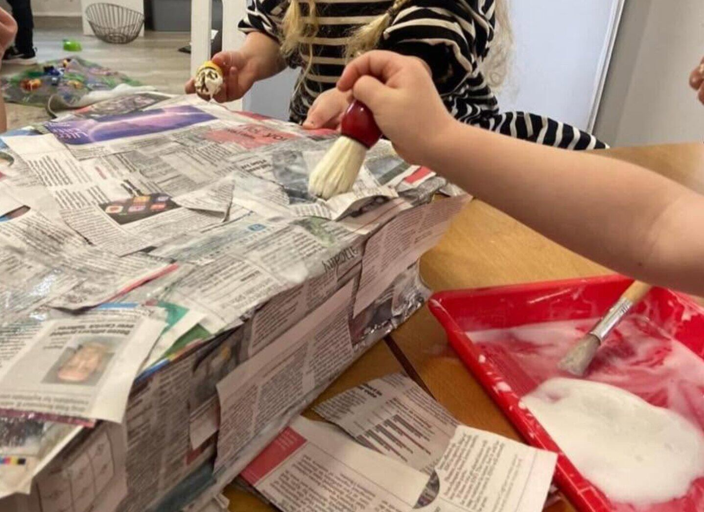

Learning never stops
Training for
bright futures.
Professional development for people working with children and young people.
Ask about trainingSVQChildren & Young PeopleSQA-accredited Level 3 training
SQA-accredited training
SVQ Level 3
Start Bright Nursery offers an SVQ Level 3 qualification in Children and Young People. The course combines theory with practical experience in a childcare setting and takes approximately 18 months, depending on the learner’s commitment and availability.
- Flexible starting date
- Theory and practical learning
- Relevant nursery experience required
- Funding may be available for eligible learners
Course cost£1,900Funding may be available for eligible learners.
After-school club
More fun after the bell
A reliable, flexible and secure service for a small number of children.Imaginative play
Physical activities
Games and books
The service is registered with the Care Inspectorate. Staff are appropriately qualified and undertake regular professional development, including first aid and food hygiene training.


